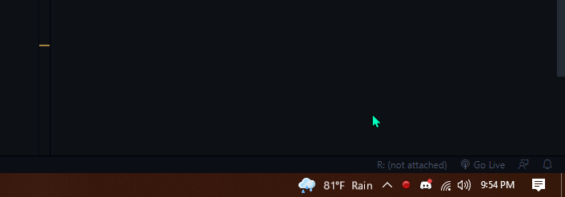

SpotiLike
Welcome to SpotiLike <3.
What is SpotiLike?

Spotify is one of the most popular free music streaming services out there.
Spotify also gives access to a personal Liked Songs library and custom private playlists which is pretty cool
However tho, if you’re a music person like me you might have the need to have a collection of your favourite tracks maybe in your Liked Songs library or different playlists.
When that new cool-ass track starts playing and you gotta add that track to your collection, I found it annoying to return to the Spotify application which indeed interupted my workflow. It can be exasperating sometimes (specially when I’m gaming)
So, I tried to come up with a solution myself because I couldn’t find anything online that matched my requirements:
What does SpotiLike do?
This simple script lets you save what you’re listening to on-the-go into your Liked Songs or your playlists with a custom keyboard shortcut without interrupting your workflow.
Features
- Custom hotkeys
- Auto-like while saving to playlists feature
- Prevents duplicate saves in the same playlist
Installation
You can download the setup file by clicking this button below.
(Would redirect you to mediafire.com)
The setup is not complicated smh.
Setup and Configuration
Bored to read? Jump to showcase and watch the walkthrough video and stop being lazy.
You would be redirected to log into your Spotify account in your browser, Log in (this could be automatic)
The application would minimize itself to the System Tray.
- What is the system tray?
Right click the SpotiLike icon(💚) and click
ConfigA file would be opened in your preferred text editor and it would contain the following:
[Liked Songs]
key=ctrl+l
auto_like_for_playlist=yes
# Have a nice day! What you have to do is simple. Here are some key points:
- You can specify any key combination/key. Currently supported special keys are:
- alt
- ctrl
- shift
- esc
- The
[Liked Songs]section is compulsory, don’t touch it except for it’s values.auto_like_for_playlistwould automatically add the song to your personal liked songs library when saving to any playlist. Change that tonoif u don’t want it.
- Every new
[custom playlist name to appear in the notification]entry would count as a playlist and it would require 2 values namely,- key - the hotkey
- playlist - the link to the playlist
Here’s an example:
[Liked Songs]
key=ctrl+l
auto_like_for_playlist=yes
[My really cool playlist <3] # This can be anything you want btw
key=alt+1
playlist=https://open.spotify.com/playlist/4DWgDHBUIsyR7sGpm08LY1?si=6fe016ea7bd0417d..is all you gotta do. So pressing alt and 1 together would save the song to that playlist which the link you specified directs to.
Also note: Saving the config file would auto reload the application so that your changes are taken place.
For extra clarification, please refer to the video which is right below, too.
Showcase
Here’s what our example resulted in:

Here’s me setting up my personal configuration:
Walkthrough:
FAQ
How do I make it open on startup?
- Press windows key + R together.
- Type
shell:startupin the dialog box that appears. - Copy the shortcut to the application into that folder that pops up. That’s it
Why do I get a timeout error on startup?
That’s probably a connection issue.
When your pc startsup, chances are the app starts before ur pc connects to the interent so the app fails to verify your credentials.
Why can’t I save the config file?
You probably need adminstrator permissions to save that.
As you’re editing the config file which is situated on the Program Files folder itself, chances are you don’t have access to that.
To fix this:
- Re-run the app as adminstrator :)
Have Fun!
💖🤞💚